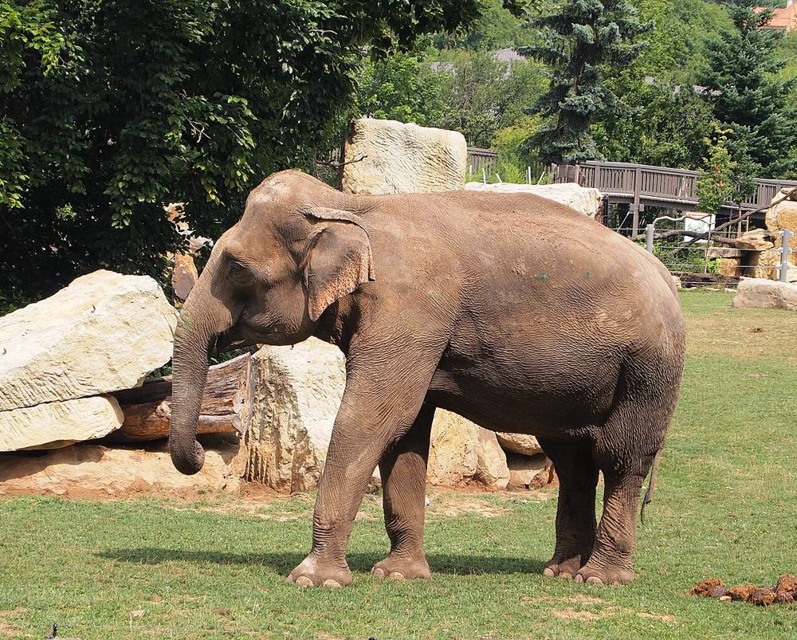

Zoo de Prague
L'un des plus beaux zoos d'Europe, sur une colline : prévoyez la journée. Un petit télésiège relie le bas et le haut du zoo, pratique pour les petites jambes.


Ce que les enfants vont aimer
Gorilles, éléphants et un télésiège au milieu des animaux.
Y aller
U Trojského zámku 120/3, 171 00 Praha 7
Bus 112 depuis la station de métro Nádraží Holešovice, arrêt Zoologická zahrada
Le plus calme : un matin en semaine. Très chargé le week-end quand il fait beau.
Autour du lieu
Toilettes, tables à langer, aires de jeux, eau potable, pharmacie et station les plus proches, avec le temps de marche.
- Toilettes : Toilettes publiques, à 1 min à pied (50 m) · gratuit
- Toilettes : Cernohouska Toilets, à 1 min à pied (60 m)
- Table à langer : Toilettes avec table à langer, à 6 min à pied (240 m) · gratuit
- Table à langer : Toilettes avec table à langer, à 9 min à pied (330 m) · gratuit · accès fauteuil
- Aire de jeux : Hriště Černohouska, à 2 min à pied (60 m)
- Aire de jeux : Aire de jeux, à 3 min à pied (120 m)
- Eau potable : Point d'eau potable, à 7 min à pied (280 m) · gratuit
D'après OpenStreetMap, non vérifié sur place.
À combiner dans la journée
Parc Stromovka
Un immense parc avec des canards et des aires de jeux.
À 1,7 km, en transports · 0–14 ans
Parc de Letná
Le meilleur balcon pour compter les ponts de Prague.
À 2,5 km, en transports · 0–14 ans
Musée national de la technique
Des trains, des autos et des avions accrochés au plafond.
À 2,5 km, en transports · 4–14 ans
S'il pleut : le plan B couvert
Questions fréquentes
Zoo de Prague : à partir de quel âge ?
Nous le conseillons de 0 à 14 ans. Gorilles, éléphants et un télésiège au milieu des animaux.
Zoo de Prague : combien de temps prévoir ?
Environ 5 h sur place, sans compter le trajet.
Zoo de Prague : quand y aller pour éviter la foule ?
Le plus calme : un matin en semaine. Très chargé le week-end quand il fait beau.
Zoo de Prague : peut-on y aller avec une poussette ?
Poussette possible, à anticiper. Quelques rues pavées autour; beaucoup d'escaliers dans le quartier (17 recensés à moins de 250 m).
Zoo de Prague : comment y aller ?
U Trojského zámku 120/3, 171 00 Praha 7. Bus 112 depuis la station de métro Nádraží Holešovice, arrêt Zoologická zahrada.
Fiche vérifiée le 29 octobre 2026. Horaires, tarifs et conditions d'accès changent souvent : vérifiez toujours sur le site officiel avant de partir. Tous les lieux de Prague avec des enfants.